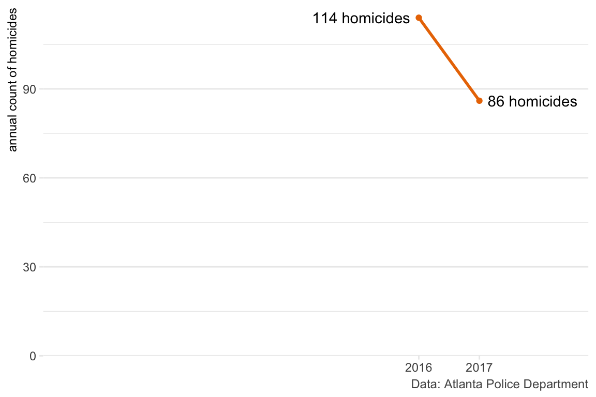
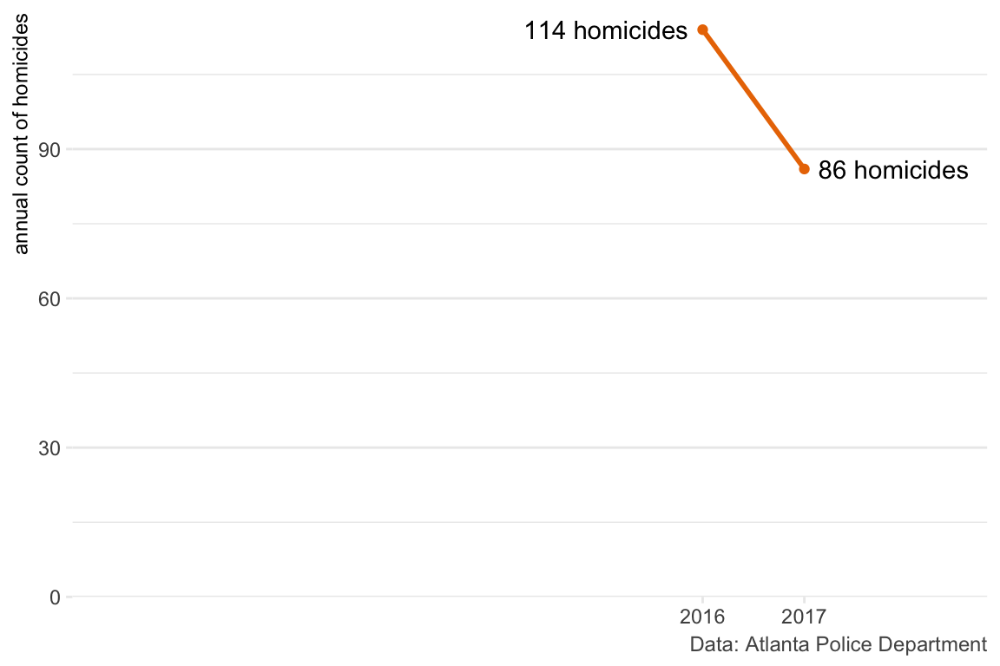

Warning: Using `size` aesthetic for lines was deprecated in ggplot2 3.4.0.
ℹ Please use `linewidth` instead.
Matt Ashby
13 May 2020
This post first appeared on the Social Research Association blog.
Understanding if some event is associated with a change in the frequency of crime is a common question, both in practice and in research. A crime analyst might need to understand the impact of a change in tactics, a local journalist might want to check the truth of the mayor’s claims that her policies are working, while an academic might seek to find patterns associated with trends in socio-economic changes.
Often, attempts to identify changes in crime frequency involve simply comparing the number of crimes this week/month/year to the number that occurred last week/month/year, or comparing this week, month etc to the same period last year. In recent weeks, we’ve seen these comparisons made to attempt to answer the topical question of how the COVID-19 pandemic is influencing crime. For example, police in San Jose told local news that violent crime had dropped 22% in the month to 18 April 2020 compared to the same period in 2019, while radio station WBUR reported that the frequency of shootings in Boston was broadly similar in March 2020 in comparison to the previous March. In Scotland, police reported overall violence fell in April 2020 compared to the year before, but fraud increased.
Binary comparisons of one period to another are common, but can be seriously misleading. I’m going to outline five reasons why you should avoid binary comparisons, then suggest some alternative methods that can produce more-reliable results. All the examples in this article use open data from the Atlanta Police Department.
The first problem with binary comparisons is that they typically ignore a great deal of other information about crime frequency. Take this chart of how the number of homicides in Atlanta changed from 2016 to 2017:
Warning: Using `size` aesthetic for lines was deprecated in ggplot2 3.4.0.
ℹ Please use `linewidth` instead.
At first glance, the decrease of 25% in homicides between 2016 and 2017 looks impressive. Whatever the police, mayor, church group, etc is doing to reduce homicide must be very successful, right? But put in the context of previous years, the picture looks quite different:
By including all the available data on homicide frequency between 2010 and 2018, we can now see that actually the decrease from 2016 to 2017 was a return to the expected number of homicides after an exceptionally violent year (the 86 homicides in 2017 is almost identical to the median of 87 homicides per year between 2010 and 2018). Maybe whatever the police, mayor etc were doing in 2017 didn’t have the effect we first thought – our impressive-looking decrease might simply be regression to the mean. The 25% drop is probably real (although it’s always worth checking for changes in recording methods), but making a binary comparison threw out useful information that might have completely changed our conclusions about why it happened.
Whenever you see a binary comparison, try asking yourself ‘yes, but what happened the year before?’ The 25% decrease in homicide between 2016 in 2017 could easily have been announced as a great success, but that year-on-year decrease could be part of any of these very-different scenarios – without more information, it’s impossible to know which is true.
Another reason binary comparisons can be misleading is that they ignore any long-term trend in the data. For example, we can see that the general trend in Atlanta over the past decade has been for the number of burglaries to decrease (although there is also seasonal variation, which we’ll get back to):
Warning: There were 2 warnings in `filter()`.
The first warning was:
ℹ In argument: `offense_month >= yearmonth(ymd("2010-01-01"))`.
Caused by warning:
! Incompatible methods (">=.Date", ">=.vctrs_vctr") for ">="
ℹ Run `dplyr::last_dplyr_warnings()` to see the 1 remaining warning.A researcher might attempt to understand the effect of some change or intervention (maybe a new anti-burglary initiative) by comparing the number of burglaries in a given month this year to the same month last year. This is very common, for example, in CompStat-style processes used to measure police performance. For example, New York City’s weekly CompStat report includes a comparison of crime frequency over the past 28 days with the same 28 days last year.
By ignoring pre-existing trends in crime, year-on-year comparisons such as this are very likely to produce misleading results. Over the period 2010–19, the average monthly year-on-year reduction in burglary in Atlanta was about 13%. A researcher doing a simple year-on-year comparison could easily conclude an anti-burglary intervention had been effective when it had actually made no difference at all. If the long-term trend had instead been for burglary to increase, a year-on-year comparison could easily have led to the (equally wrong) conclusion that a new program was making the problem worse.
Months are a very common unit of analysis for measuring crime. For example, almost all the academic research on how much crime varies across seasons uses monthly crime counts. But months are a terrible unit of analysis for temporal data. The most obvious reason for this is that not all months are the same length. A recent CNN article on domestic violence during the coronavirus pandemic noted:
“[of] 20 large metropolitan police departments that provided data to CNN, nine saw double-digit percentage jumps in domestic violence cases or 911 calls in March, either compared to the previous year or to earlier months in 2020”
but this ignores that March is 11% longer than February, so even if crime occurred at the same rate on every day in both months we’d expect a double-digit increase in crime in March (it also ignores that 11 departments did not see such an increase, but that’s a separate problem).
The second problem with measuring the frequency of crime by month is that not all months have the same number of each weekday, and many types of crime vary by day of the week. For example, aggravated assaults in Atlanta are concentrated at weekends:
The varying number of each weekday across months can easily generate changes in crime. October 2010 had 31 days, including five Saturdays and five Sundays, while November had 30 days including four Saturdays and four Sundays, which may go some way to explaining why aggravated assaults decreased by 15% from October to November that year.
The only good reason to use months as units of analysis is if you only have access to monthly data (e.g. if you’re using published monthly administrative data). If you have access to incident-level data, it is much better to use a unit of analysis that doesn’t have these problems, such as weeks or 28-day periods.
Many social phenomena, crime included, are more common at some times of year than others. Sticking with aggravated assaults, we can see that they tend to be more common in the summer than the winter (although there is a lot of noise):
Over the decade 2010–19, on average the frequency of aggravated assault increased slightly (by about 1.7% per month) in the first half of the year and decreased slightly (by about 4.2% per month) in the second. This means that if we were comparing assaults in March to assaults in February (even if we corrected for the number of days in each month, and the different number of weekdays), we’d expect assaults to increase even if nothing had changed except the seasons.
Perhaps the most-important reason why comparing one year/month/week/day to the next is that crime data are typically quite noisy. Looking at larceny from vehicles in Atlanta, we’d expect a week-to-week change of at least 10% about every other week, at least 17% about once a month and at least 35% about once a year:
Noise is likely to be higher when analysing shorter time periods, smaller geographic areas or more-serious crimes, because in each case the number of crimes is likely to be lower. Most police crime analysts will have a story of a local commander who came to them in a panic about a 100% week-on-week increase in a particular crime type, only to be reminded that the number of crimes had simply increased from one to two. Analysing small areas, short time periods and serious crimes might well be important, but it requires dealing with a greater degree of noise in the data.
Knowing the limitations of binary comparisons, some of the reported changes in crime during the coronavirus lockdown seem unremarkable. For example, the 10% year-on-year drop in crime in Chicago reported by Time and the 18% week-on-week decrease in burglaries and assaults in New York City reported by The Washington Post both seem like they could be entirely unrelated to the virus. There are plenty of theoretical reasons for thinking crime will change during the pandemic, but identifying changes reliably means using all the available information and taking into account trends, seasonality and noise.
There are several options for robustly identifying changes in crime associated with particular events or interventions. In some circumstances, you can run a randomised controlled trial, with people or places being allocated at random to either receive the intervention (be it an anti-violence initiative or new door locks) or not. Intervention areas can then be compared to non-intervention areas with a high degree of confidence that any systematic difference (other than the intervention) has been eliminated. Randomised trials have been used extensively in some areas, such as understanding the effectiveness of hotspot policing. However, randomised trials can only be run where you can choose where to target the intervention – you can’t randomise which cities are most affected by a global pandemic.
When a randomised trial is impossible, you can use quasi-experimental approaches, such as difference-in-difference or regression discontinuity designs. These approaches involve comparing the people/places/groups that experienced a particular change to people/places/groups that didn’t experience the change but are otherwise similar to those people/places/groups that did.
Quasi-experimental designs rely on the availability of a comparison group. If this is impossible, as in the case of trying to analyse the effect of a global phenomenon, alternative approaches are needed. Interrupted time-series designs use earlier data (from before whatever you’re interested in happened) as a comparison, but are only useful for measuring the impact of sudden changes.
One approach I used recently to understand how crime changed in large US cities in the early months of the COVID-19 pandemic was to create a synthetic comparison group by using previous crime data to build a model that forecast how much crime would have occurred in the absence of the pandemic. The code to replicate that analysis is available online.
Some of these methods might be beyond the capabilities of some people who need to work out if some event was associated with a change in crime. The increasing number of pracademics working in (for example) police forces means more agencies have the capability to carry out this sort of analysis. Many universities are also happy to partner with agencies for this type of work.
Binary comparisons are easy to make, but there is little point if the results might be misleading. The extra work to produce reliable results is almost invariably worth it to avoid being misled, especially when those results are going to be used to make important decisions. Use the links here to identify a method that is going to work for your circumstances, or look for more detail in a textbook such as the free Causal Inference: the mixtape by Scott Cunningham. If you have any questions, feel free to ask me on Twitter or contact me via my website.
The annotated R code to reproduce these charts and figures is available on GitHub.